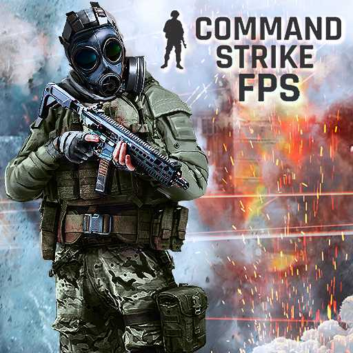

Command Strike FPS
Core feel: fast firefights, direct aim duels, and quick respawn practice.
Visual direction: a direct combat theme built around weapons, targets, and pressure.
Best fit: players who want straightforward browser shooting reps and quick match resets.
Primary improvement area: crosshair placement and reaction speed.
Quick Take
Command Strike FPS is cataloged on SkillWarz as a browser game built around fast firefights, direct aim duels, and quick respawn practice.
The page is written for visitors who want a quick read before launching a session, especially when deciding whether the game fits players who want straightforward browser shooting reps and quick match resets.
Command Strike FPS is framed as a straightforward military-style browser shooter, making the page more useful for players who want familiar FPS structure without extra progression systems to parse first.
What To Expect Before You Click Play
Most FPS visitors care about weapon feel, route clarity, and how quickly they can reset after a mistake.
For Command Strike FPS, the main question is whether the first session communicates its loop clearly enough to keep you in the game after the opening minute.
Playable Browser Frame
The browser frame is loaded only when a visitor chooses to open it, which keeps the editorial summary and player-fit notes visible before any third-party session starts.

Load Command Strike FPS only after you have read the quick take
This page keeps the original summary and player-fit notes visible first, then lets the visitor choose whether to open the playable browser frame.
Why Players Usually Try This Kind Of Page
- Core feel: fast firefights, direct aim duels, and quick respawn practice.
- Visual direction: a direct combat theme built around weapons, targets, and pressure.
- Best fit: players who want straightforward browser shooting reps and quick match resets.
- Primary improvement area: crosshair placement and reaction speed.
Editorial Notes
- Playable browser embeds may be provided by a third-party distribution partner when available.